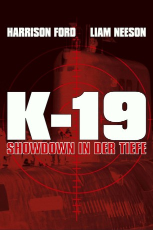
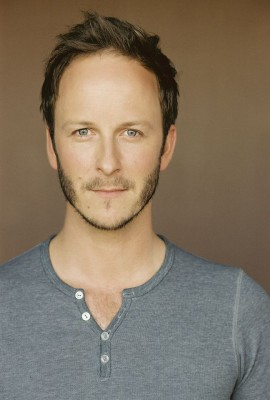
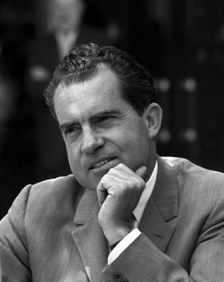

#4272 K-19 - Showdown in der Tiefe
Alternativ: K-19: The Widowmaker
 
 IMDB-Wertung: 6.7 / 10
IMDB-Wertung: 6.7 / 10  Metascore: 0
Metascore: 0 
Der russische Vorzeige-Kapitän Alexei Vostrikov übernimmt an Stelle von Skipper Mikhail Polenin auf Geheiß des Kreml das Kommando auf dem neuen Atom-U-Boot K-19. Unter Vostrikov muss die schlecht geschulte Mannschaft wenig später mit dem unausgereiften Schiff auslaufen. Und so kommt es schon auf der Jungfernfahrt zur Katastrophe, denn der Reaktorkern beginnt sich langsam aufzuheizen. Erreicht dieser 1000 Grad, käme es unweigerlich zum atomaren Störfall und somit wahrscheinlich auch zum Dritten Weltkrieg...
Jahr: 2002
Dauer: 138 Minuten
FSK: 12
Land: England Studio: Constantin FilmTonspuren:
Untertitel: Deutsch,
Auflösung: 720p (1280x544) Größe: 5601 MB
Genre: Drama, Geschichte, Thriller, Krieg
Regisseur:  Kathryn Bigelow
Kathryn Bigelow
Drehbuch: George St. George
Soundtrack:
Darsteller:
 Sam Spruell als Dmitri
Sam Spruell als Dmitri- Peter Stebbings als Kuryshev
 Christian Camargo als Pavel
Christian Camargo als Pavel Sam Redford als Vasily
Sam Redford als Vasily Liam Neeson als Capt. Mikhail Polenin
Liam Neeson als Capt. Mikhail Polenin Ravil Isyanov als Suslov
Ravil Isyanov als Suslov Tim Woodward als Partonov
Tim Woodward als Partonov Lex Shrapnel als Kornilov
Lex Shrapnel als Kornilov Shaun Benson als Leonid
Shaun Benson als Leonid- Kris Holden-Ried als Anton
-  Christopher Redman als Kiklidze
- Tygh Runyan als Maxim
 Joss Ackland als Marshal Zelentsov
Joss Ackland als Marshal Zelentsov Harrison Ford als Capt. Alexei Vostrikov
Harrison Ford als Capt. Alexei Vostrikov John Shrapnel als Admiral Bratyeev
John Shrapnel als Admiral Bratyeev- James Francis Ginty als Anatoly
 Peter Sarsgaard als Lt. Vadim Radtchinko
Peter Sarsgaard als Lt. Vadim Radtchinko Jacob Pitts als Grigori
Jacob Pitts als Grigori Michael Gladis als Yevgeny Borzenkov
Michael Gladis als Yevgeny Borzenkov Donald Sumpter als Dr. Gennadi Savran
Donald Sumpter als Dr. Gennadi Savran Steve Cumyn als Arseni
Steve Cumyn als Arseni- Austin Strugnell als Yakov Rakitin
 JJ Feild als Andrei
JJ Feild als Andrei- Peter Oldring als Vanya
 Joshua Close als Viktor
Joshua Close als Viktor Ingvar Eggert Sigurðsson als Chief Engineer Gorelov
Ingvar Eggert Sigurðsson als Chief Engineer Gorelov Jeremy Akerman als Fyodor Tsetkov
Jeremy Akerman als Fyodor Tsetkov- James Clayton als Russian Officer , uncredited
- Mark Day als Russian Sailor , uncredited
 Mark Antony Krupa als Georgi , uncredited
Mark Antony Krupa als Georgi , uncredited- William Lucas als Yuzef Mankevich , uncredited
- Ryan McDonell als Russian Officer , uncredited
-  Richard Nixon als Himself, with Pat , archive footage, uncredited
 Roman Podhora als Lapinsh
Roman Podhora als Lapinsh Steve Nicolson als Demichev
Steve Nicolson als Demichev Dmitry Chepovetsky als Sergei
Dmitry Chepovetsky als Sergei- George Anton als Konstantin
- Peter Graham als Lt. Danya Yashin
- Shawn Mathieson als Stepan
- Christopher Routh als Oleg
- Lubomir Mykytiuk als Dr. Gavril
- Natalya Vintilova als Katya
- Arsenty Sydelnykov als Seymon 'Syoma' Dydik
- Gerrit Vooren als Voslensky
- Joey Purpura als Georgi
- Lev Prygunov als Ivan Vershinin
- Lee J. Campbell als Judge
- Toby Cockerell als Russian Sailor , uncredited
- Pat Nixon als Herself, with Richard , archive footage, uncredited
Datei: X:\2002\K-19 - Showdown in der Tiefe (2002, FSK12, 1280x544).mkv seit 30.08.2016
Festplatte: HD 1996-2002
 Es gibt insgesamt 93 Filme in der Gruppe '2002'
Es gibt insgesamt 93 Filme in der Gruppe '2002'